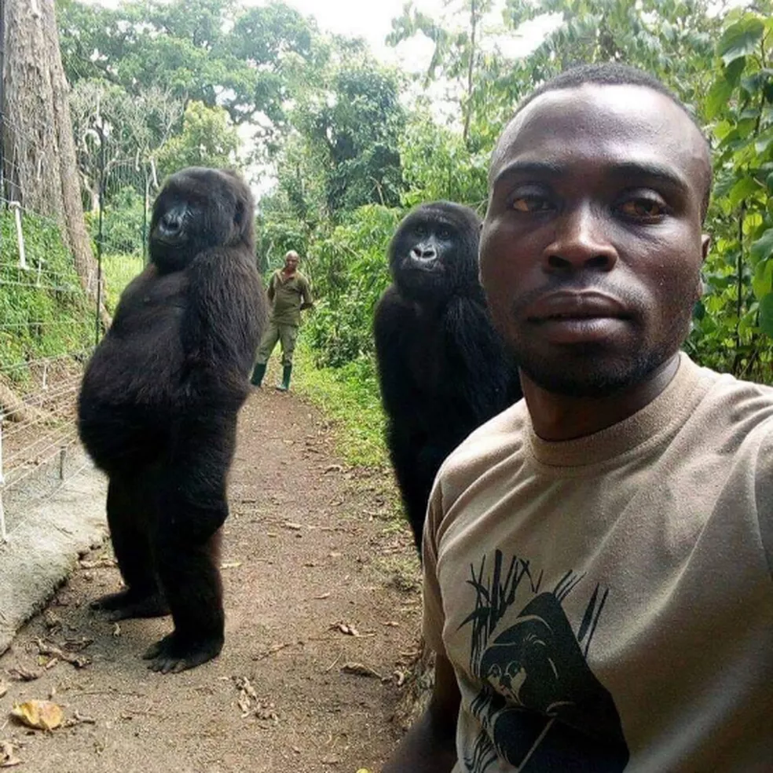
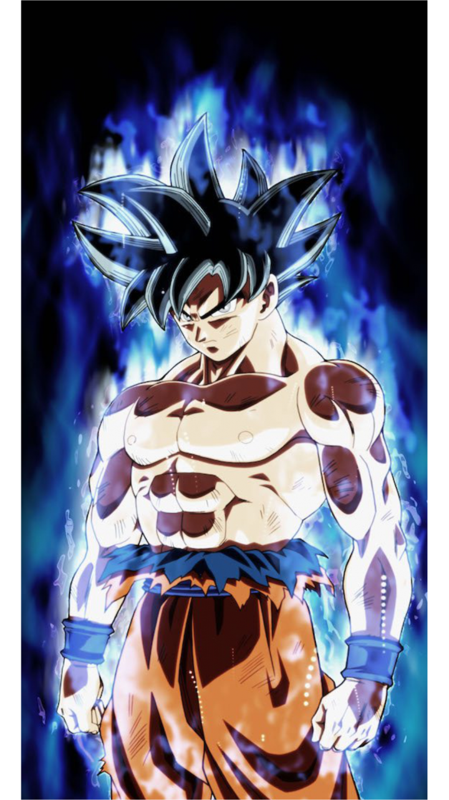

GORILÃO
GORILÃO


| GORILÃO |
|||
| |
|||
| INÍCIO | QUEM SOMOS | PRODUTOS | CONTATO |
|
Somos uma equipe de profissionais que sonham com o shape perfeito, o shape dos gorilas!
Com muitos anos de pesquisa, treinamento, e convivência com os gorilas, conseguimos encontrar o treino perfeito para todos tipos de biotipos e gêneros. Agora qualquer um pode ter o shape do masqueico que quiser, so presisará de dedicação e persistência. |
 |
|  |
Ao lado temos um dos fundadores do gorilão. Que antes dos treinos, era apenas uma masqueico descontrolado,
mas ele não podia continuar assim, então comessou a sua jornada para controlar o seu masqueico interior,
com anos de treinamento, e enfrantando varios inimigos odiadores de masqueicos, goku conseguir a forma do masqueico superior.
Agora ele está como treinador na gorilão para ajudar você também a controlar seu masqueico interior.
|